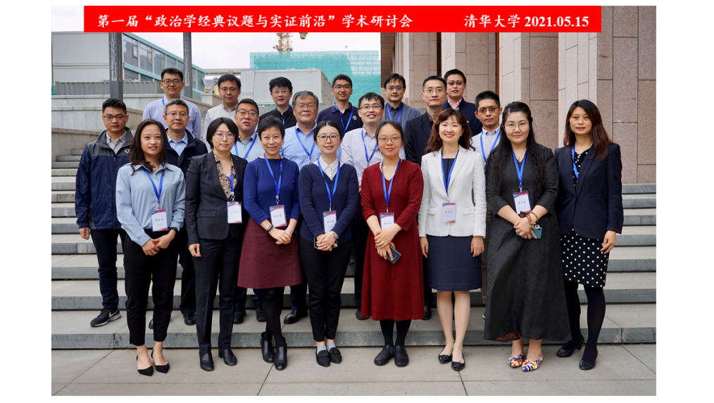
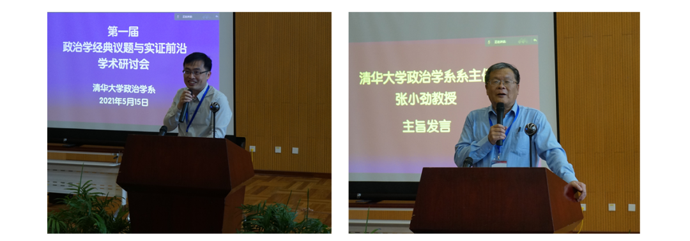
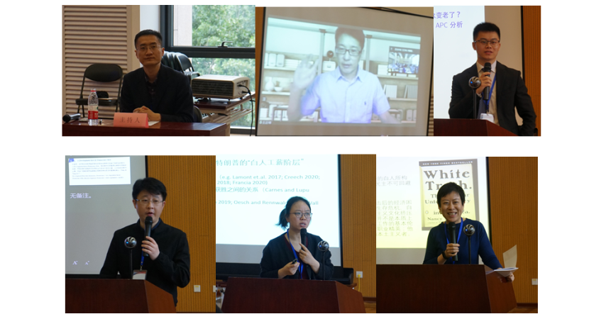
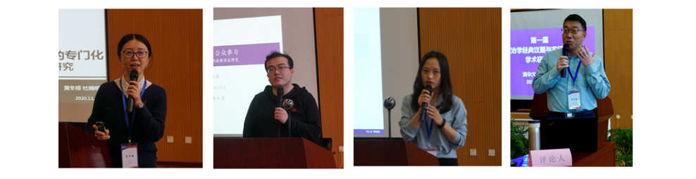
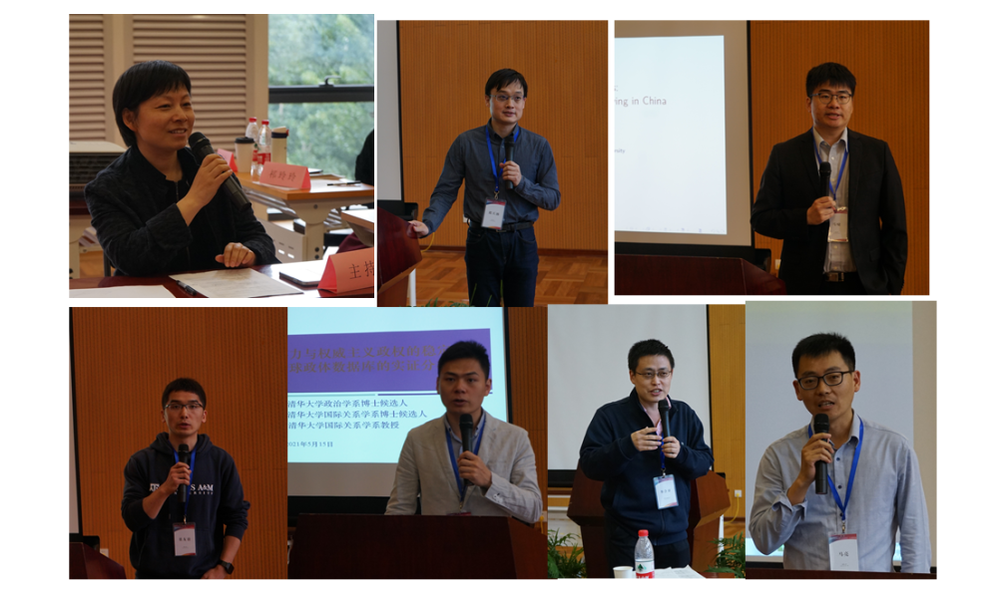
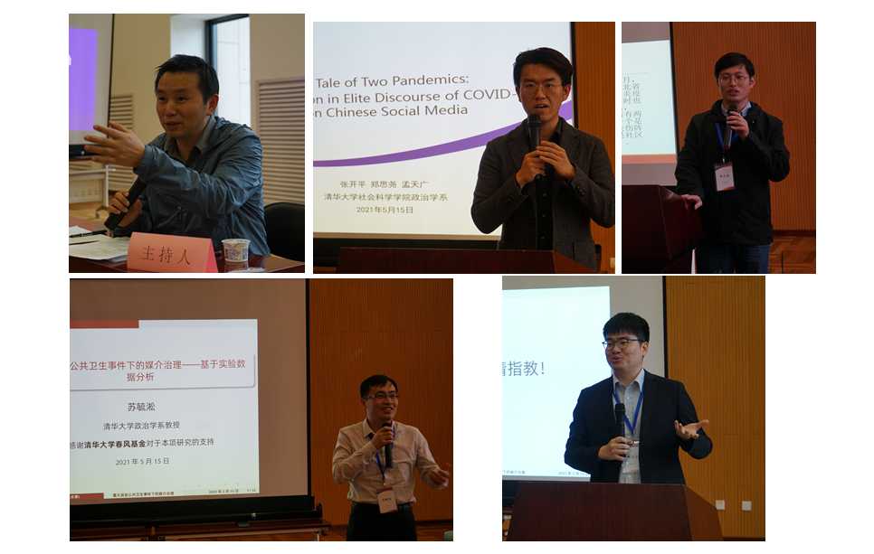

收录于合集 #会议速递 20个
2021年5月15日，清华大学政治学系召开“政治学经典议题与实证前沿研讨会”，来自清华大学、北京大学、中国人民大学、复旦大学、南京大学、山东大学等高校的学者以及权威期刊的编辑齐聚一堂，对诸多政治学经典议题进行了精彩的研究并展开深入讨论，此外，部分学术媒体以及数十位来自清华大学等高校的学子们到会旁听。

会议开幕式由清华大学政治学系教授、博士生导师苏毓淞主持，其对各位专家学者的到来表示感谢，并希望与会人员能够对相关研究多提问题和建设性意见，以便帮助学者们完善研究。清华大学政治学系系主任张小劲教授作了主旨发言。在发言中，张小劲教授结合自身经历以及对当前中国政治学研究趋势的判断，认为政治学的研究应该保持其学科特色，提出在继承的基础上进一步发展和创新政治学的相关要求。

“政治变迁的时空比较”环节由中国人民大学国际关系学院教授韩冬临主持。复旦大学国务学院教授王正绪汇报了有关中国2000-2019年间社会价值观的研究，他的研究表明，价值观在我国不同代际间存在显著差异，同一代际内价值观差异不大。清华大学政治学系博士候选人刘江锐基于APC方法对我国民粹主义进行分析，他的实证研究表明近些年来我国民粹主义确实出现上升趋势；山东大学教授唐睿对政治体制和经济发展间关系的文献进行总结和分析。南京大学政府管理学院副教授祁玲玲的研究分析了美国低收入白人群体和大选投票关系，其发现被忽略的低收入白人群体在大选投票中起着重要的作用。清华大学政治学系副教授刘瑜对汇报进行了精彩点评，并提出建设性建议，发言人也对评论人和现场提问进行了回应。

“中国政治的运作逻辑”环节由清华大学政治学系副教授于晓虹主持。中山大学政务学院教授黄冬娅从政商关系的视角回答了互联网经济企业内部的政府事务部门呈现的扩张趋势。清华大学博士候选人杨泽森汇报了官员更替对公众政治参与行为影响的研究，其实证分析发现，外调官员显著影响公众政治参与水平等；清华大学政治学系博士候选人杨惠基于1991-2019年数据分析汇报了有关中国立法效率的研究，结论发现党越重视，法案越容易通过等。清华大学教授杨雪冬对三篇发言进行了点评，分别指出了每篇研究存在问题，并提出了改进建议。此外，听众踊跃提问，与会专家对相关问题进行了深入讨论。

“政治权力的互动与博弈”环节由《世界经济与政治》杂志编辑部副主任主父笑飞主持。北京大学国家发展研究院副教授席天扬分享了其团队对制度设计如何影响领导权力的研究。利用大数据方法以及坦桑尼亚的案例，其分析发现，非正式约束对政治组织内部权力运行的方式有重要影响、制度和非正式的约束是互补关系等。北京大学政府管理学院助理教授马啸的研究则以中国高铁建设为分析对象，探究了政治遗产对地方经济发展的影响，结论发现存在本地精英资源的地方在向上竞争政策资源的过程中享有优势。中国人民大学公共管理学院助理教授张友浪汇报了政府和非营利组织的合作关系对个人捐赠影响的研究，基于实验研究分析发现，非盈利组织主导情况对个人捐赠起负面作用。清华大学政治学系博士候选人汤峰为大家分享了政治吸纳如何影响非西方选举民主政体稳定的研究，通过对搜集整理1946-2019年全球政体数据库全新资料的分析发现，政治吸纳对相关国家政权稳定存在正向促进作用，不过这种作用主要存在于该国执政党实力强大情况下，否则容易引起政权更迭。清华大学公共管理学院副教授陈济冬对席天扬、张友浪和汤峰的汇报做了精彩点评，在肯定他们研究的基础上提出了进一完善相关研究的建议。中国人民大学公共管理学院教授马亮对马啸老师的研究进行了点评并给出了建设性意见。现场听众进行了提问，汇报人分别对评论人和提问做了回应。

“疫情下的媒介治理”环节由《新闻与传播研究》执行主编朱鸿军老师主持。清华大学政治学系博士生郑思尧基于微博数据分析了疫情中的政治极化现象，研究发现，官媒的关注扩大了温和左派，而对极端派意识形态没有影响。山东大学人文社会科学青岛研究院助理研究员姬生翔通过问卷调查的方式对普通群众转换为党员干部身份后的奉献精神、工具理性，以及社区网络结构进行了测量，并对问卷调查结果进行倾向值匹配，发现党员干部身份的弱工具理性特征在社区疫情防控参与过程中得到充分体现。清华大学政治学系教授苏毓淞作了《重大公共卫生事件下的媒体治理：列表和代言实验》报告，探究了疫情对中国公众政治信任的影响；并使用列表实验解决问卷中可能存在的社会期望偏差的问题。实证结果表明，中国民众对政府有着极高的满意度，同时对媒体的成功运用能提高政府满意度。随后，北京大学政府管理学院助理教授马啸对汇报人的研究进行了点评，三位主讲人对点评以及提问进行了回应。

“国内政治学研究及发表动态”圆桌讨论环节由清华大学政治学系教授苏毓淞主持。《国外理论动态》副主编刘承礼老师强调，政治学经典议题离不开政治：既有政治属性、符合主流意识形态,和中央保持高度一致；同时也要具有学术属性。实现政治与学术的统一。此外，经典与前沿不可截然分开。《新闻与传播研究》执行主编朱鸿军老师认为，对高校老师的评价权不应掌握在期刊手里，破五唯后意味着对科研工作者有更高要求，期刊都有自己规范的审稿流程。为发表高质量文章，他主张学人间应跨界、追求异质性，同时还要加强合作，注重研究规范，研究要对理论加以回应。《世界经济与政治》编辑部副主任主父笑飞老师介绍了《世经政》杂志的风格，其相对偏爱基于理论困惑的研究、对定量研究也非常欢迎，审稿流程比较规范。同时主父老师还建议学人在投稿前，应提前了解杂志，写作内容和方法向其靠近、注意写作规范。《行政论坛》副主编于健慧老师结合自身工作经历对学术研究和写作提出了若干建议，其认为，学术研究最好能具有家国情怀，坚持知识分子的风骨，选题上做到跨学科融合，论文要讲究规范，不能为追求创新,而投机取巧、针砭时弊时不能片面；数据不能过分陈旧，最好是近3年的数据，此外研究还要抓住中国政治的真问题等。现场讨论氛围非常热烈，在场的师生积极提问，编辑们对大家的困惑逐一解答。
经过一天精彩而充分的讨论，本次研讨会落下帷幕，清华大学政治学系教授苏毓淞教授在闭幕式环节做了总结发言。苏毓淞高度肯定本次会议嘉宾的研究成果，为清华大学校内外的学子们带来一场精彩纷呈的学术盛宴。他认为，政治科学应努力实现理论研究与方法创新的统一，相关研究在引入科学、规范与前沿的分析方法和工具的基础上，要格外重视与政治学经典理论的对话，不能将政治学仅仅定位为一种“治理术”，还应有理论关怀，对理论继承和创新。同时，他也欢迎大家明年能够再次参会！
文字：汤峰 编辑：康张城